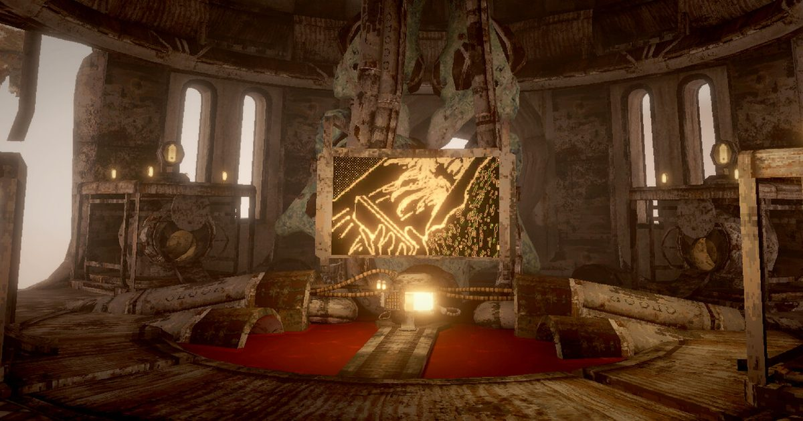

2026-10-25 · 玩法深读
《HELENA : Cloud District》定在 10 月 29 日登陆 Steam，免费。官方描述是这样一句话：探索一座巨型结构的遗迹，寻找神秘的植物，用相机把它们拍下来，再把照片带回这个世界中心的那台电脑。 Rock Paper Shotgun 这周为它写了专文，还顺手把 10 月 29 日命名为「巨型结构日」——因为同一天还有《Hypnos》上线。 但真正让我们想写它的，不是美术，也不是「巨型结构」这个正在流行的母题，而是一个很小的数字：你的相机，任何时刻只有三个照片槽位。

你进入的是一座看起来早就废弃、正在腐烂的巨型结构，里面长满了各种奇怪的植物。 它的底层标签里同时挂着「探索」「精确平台跳跃」「第一人称」「3D 平台跳跃」——也就是说，它的一部分内容是相当硬的第一人称跳跃：层层叠叠的空间，落差陡到「掉下去大概还没落地就没命了」。 但官方同时给了滑行、悬停、滑翔三种移动手段，并且明确写了「没有唯一正确的路线，你自己开路」。
结构正中央是一台电脑。你拍下的所有照片都要带回这里上传，每上传一次，这座建筑被遗忘的历史就露出一层。集齐全部照片，才能看到完整的故事。
那台相机本身是全场最怪的东西。它不是相机，更像一顶金属头盔，准备拍照的时候，一排昆虫那样的节段会「咔哒」一声合拢到位。 官方还标了轻度恐怖内容提示：含血液与轻微令人不安的画面与叙事。
顺手说一个真人一眼能看出来的细节：Steam 页面的最低配置里，「存储空间」那一行写的是 5 MB。 这显然是把 GB 写成了 MB 的笔误。它没多大意义，但很能说明这是什么规模的项目——开发者和发行商栏里填的都是游戏自己的名字「Helena : Cloud District」，社交账号挂在 Bluesky、X、TikTok 和一个法语界面的 Instagram 上。这是一个很小的团队在自己的发行。
摄影游戏从诞生起就在跟同一个问题搏斗：凭什么让玩家停下来看，而不是跑过去。 开放世界游戏加摄影模式，玩家用三分钟就腻了；专门做摄影的游戏，又必须回答「拍够了没有」「拍得好不好」。
过去的解法大致有两类。一类是外部评价：《宝可梦随乐拍》给有限胶卷和一套评分系统，由游戏告诉你这张拍得好不好——代价是审美被压成打分，玩家开始为了分数构图。 另一类是取消评价：《Umurangi Generation》给无限胶卷，把摄影当纯粹的表达——代价是没有反馈，玩家常常不知道自己到底拍够了没有。 《Eastshade》把画架做成 NPC 任务道具，《Toem》把拍照做成开门的钥匙，本质上都是「取消评价」的变体。
HELENA 走了第三条路，而且是很硬的一条：它不评价你拍得好不好，它限制你能带走多少。 三个槽位意味着「拍摄」和「拥有」被拆成了两个动作——按下快门只是占住了槽位，你还得把这张照片活着带回去，它才算数。 这不是限制，这是节拍器。它把一局探索切成「出去 — 满载 — 回来 — 卸货」的循环，每一次循环都自带一个明确的终点，而探索游戏最缺的就是终点。
这里有个反常识的地方值得单独讲。「回程（backtracking）」在关卡设计里几乎是个脏词。 让玩家原路走一遍，通常意味着设计者没内容可填了。大量开放世界游戏要花很大力气把回程做成传送、做成快捷方式、做成解锁捷径。
HELENA 反着来：它把回程写成核心循环里不可跳过的一半，而且看样子不打算给你捷径。 它凭什么敢这么做？答案在移动系统里。如果只有走和跳，原路返回就是纯损耗；但它给了滑行、悬停、滑翔—— 这三样东西的共同点是：它们让「从高处回中心」和「从中心爬上去」变成两条不一样的路径。 去程是一次攀爬，回程是一次飞行。同一片空间被用两次，而且第二次的视角、速度、风险全都不一样。
这个思路有个很有名的近亲：《死亡搁浅》把「送货」——一个在传统游戏里属于跑腿的环节——做成了整个玩法。 两者的共同方法是：先承认「往返」是结构的一部分，再往这个结构里塞进足够多的变量，让每一次往返都产生新信息。 HELENA 的版本更轻：它的变量是「你这次带回来的三张是什么」。
还有一层是那台中央电脑。它不只是存档点，它是唯一的读者。 你把照片交给一台「沉睡的电脑」，等着它吐出一段被遗忘的历史——你在给一个不知道还能不能回应的东西做记录。 这一步把摄影从「自我表达」悄悄转成了「考古」甚至「献祭」。 轻度恐怖感的来源也在这里：你不知道这台电脑是什么，不知道它在不在听，但你每一次都得回去找它。
最后是相机造型。它不是手持的，是要「戴」上去的——昆虫节段咔哒合拢，把头包住。 这个设计把拍摄从「观察行为」改成了「穿戴行为」，暗示在这个世界里，拍照是一种与身体绑定的仪式，不是随手掏出来的工具。 它和「只有三个槽位」是同一个意思的两种表达：这个动作很贵，所以你得想清楚。
我们的观察：「巨型结构」正在成为独立游戏的一个稳定母题，而且热度是肉眼可见的。 Rock Paper Shotgun 的作者自己都承认，这是他一周之内第二次写巨型结构游戏。它通常和另外两个词绑在一起出现：liminal space（阈限空间）与粗野主义建筑。 但这个母题有一个几乎躲不掉的风险：大空间 + 小内容 = 空。 让玩家在一座巨大的建筑里走二十分钟却什么都没发生，是所有这类作品最容易掉进去的坑。 HELENA 用三个槽位对抗的，恰恰就是这个「空」——它逼你反复地、有理由地凝视同一片空间。 从设计上说，这一步是对的。
我们的观点：免费发布不是让利，是这个设计的一部分。 氛围向、短流程的探索游戏在 Steam 上最怕两件事：一是被放进「两小时退款」的性价比天平上称，二是被价格预期拖累好评率——花 70 块买两小时的人，和免费下载两小时的人，给出的评分不是一回事。 免费让它不必用时长证明自己。但代价同样明确：它放弃了价格筛选，必须在前 15 分钟里靠机制本身立住，否则玩家连吐槽都懒得写。 对一个自发行的小团队来说，这是个相当清醒、也相当冒险的选择。
我们的案例对比：摄影游戏怎么解决「凭什么停下来看」
| 作品 | 稀缺资源 | 由谁评价 | 成本落在哪 | 典型失败模式 |
|---|---|---|---|---|
| 《宝可梦随乐拍》 | 有限胶卷 | 系统打分 | 等待最佳时机 | 审美被压成分数，玩家为分构图 |
| 《Umurangi Generation》 | 几乎无限 | 玩家自己 | 主观判断 | 没有反馈，不知道拍够了没 |
| 《Eastshade》 | 画布数量 | NPC 任务 | 跑腿交付 | 绘画沦为交付物 |
| 《Toem》 | 无限胶卷 | 解谜是否通过 | 找到拍摄对象 | 拍照退化成一个按键 |
| 《Firewatch》拍照模式 | 一次性相机 | 无人评价 | 几乎为零 | 纯彩蛋，玩一次就忘 |
| 《HELENA: Cloud District》 | 三个槽位 | 中央电脑（叙事验收） | 路径规划与回程 | 回程疲劳：若滑翔不好用，循环立刻崩 |
我们的实验：上线之后我们打算做一次可以自己复现的测量，叫「回程计时」。 做法：从你拍满三个槽位的那一刻开始计时，直到把照片上传进中央电脑为止，记一次；跑五轮取平均。 如果平均超过两分钟，说明滑翔系统没能兑现「回程也是一场表演」这个承诺，循环会开始磨损；如果低于 45 秒，那说明这座结构其实比它看上去小得多，「巨型」两个字主要是美术给的错觉。 这个数落在 60～90 秒之间，才说明设计是成立的。
我们的评分：概念新鲜度 8.6／落地风险 6.8 → 综合 7.8（前瞻）。 给到 8.6 是因为「把存储空间做成稀缺资源」这一步，是近几年摄影游戏里少见的结构级创新，而不是美术或题材上的小修小补； 扣到 6.8 是因为它的成败几乎完全押在「滑行 / 悬停 / 滑翔」的手感上——这套机制里没有第二个支点，移动一旦不好玩，三个槽位就会从巧思变成折磨。
先说结论：值得加愿望单，而且它免费，试错成本接近于零。但请把期待放在「机制」上，不要放在「内容量」上。
给三类玩家的具体建议：
10 月 29 日那天，真正需要盯的就一件事：第一次拍满三张之后，你想不想立刻回去上传。 如果想，这套循环就立住了，剩下的只是内容够不够；如果那一刻你心里冒出来的是「又要走回去」——那这三个槽位就没能变成节拍器，只变成了负担。 一个这么小的设计敢押上整款游戏，本身就是值得看一眼的理由。